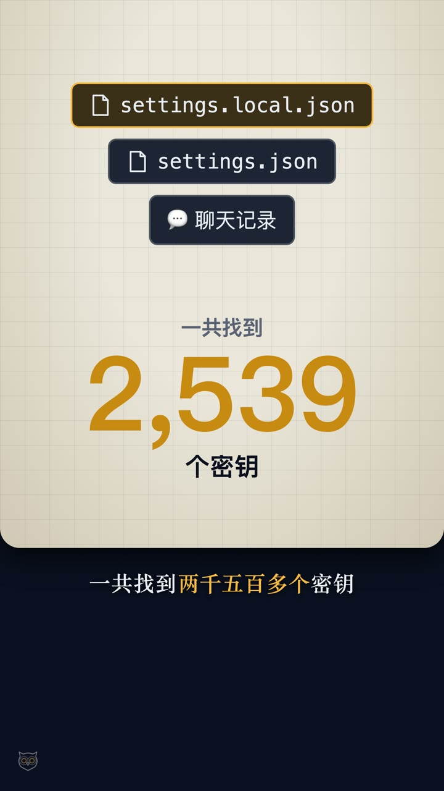

Business system, solo build, web and WeChat Mini Program
Farm Management System
I turned a farm owner's requirements, one by one, into a single system: approvals (OA), inventory (ERP), finance and analytics, shared by a web back office and a WeChat Mini Program. A real farm uses it every day.
Home: stock value, headcount and a 12-month purchase and sales trend
Approvals and tasks (OA)Write-offs and expenses are approved online. Problems found in inspections become tasks with tiered sign-off and WeChat notifications.
Inventory (ERP)Every animal's intake, sale and write-off is recorded, and every hatchling traces back to its breeding pair.
FinanceValue per animal and profit per year are calculated automatically, alongside expenses and cash accounts.
Tracking and analysisData builds up over time across 7 dashboards and a big-screen view the owner runs the business on. Customers can scan a QR code for a traceability page.
The problem
Where each animal came from and where it went, which pair produced each hatchling, what each animal was worth and what the farm earned each year: all of it lived in a dozen shared spreadsheets and manual reconciliation. Nothing added up, and nothing could be traced.
What was delivered
A web back office and a 51-page WeChat Mini Program. Staff record on site from their phones, and the owner reads the numbers in the back office. It is live and used daily.
My role
Sole developer: requirements with the owner, back office, Mini Program, database and APIs, deployment, and ongoing maintenance and iteration.
- Live, used daily by a real farm
- 51-page Mini Program
- 7 dashboards
- 87 backend APIs
- 35 data models
- Automated tests and CI
StackNext.js 15, React 19, Ant Design, Prisma, PostgreSQL, Taro, Docker, Alibaba Cloud OSS, WeChat notifications
Source code is private. Screenshots come from a de-branded demo mode with generated data. The live system runs in Chinese for the client; labels are shown in English here.
Video production pipeline
Video Production Pipeline
I built a short-video channel from zero and produced all of its videos. Explainer videos now ship reliably through one pipeline, which runs across 3 channels.



Left: the first 22 seconds of a finished episode (tap for sound). Right: frames from the same episode. Visuals are generated with code, and subtitles are aligned word by word with the voiceover. The channels are Chinese-language.
- Topic
- Reference breakdown
- Script and review
- Voiceover
- Visuals
- Self-check
- Render and cover
- Publishing pack
- Data review
The problem
Making videos alone, every step (script, voice, visuals, subtitles, cover) depended on feel. Quality swung up and down, and there was no way to tell which step went wrong.
What I built
Production is split into fixed steps, each with a defined output and acceptance check. Before export, scripts check loudness, subtitle position and whether the narration matches the script. After release, data is reviewed at day 1, 3 and 7, and the lessons feed the next episode's standards.
Each delivery
A 4K video with and without subtitles, covers in three aspect ratios, publishing copy and a delivery sheet. Music and sound effects are synthesised in-house, so there is no licensed material.
- Used on 3 channels
- About 20 videos
- About 5 hours per episode
- 4K landscape and portrait
StackRemotion, React, whisper, ffmpeg, Claude Code skill
Next: bring talking-head video editing into the same pipeline.
Desktop app, open source
Jizhang Bookkeeping
Offline bookkeeping software for small businesses. Install it and start.
Dashboard: cash, income and net profit for the year, recent vouchers
The problem
Small businesses and freelance bookkeepers wanted a tool that needs no internet and no database server, with books they can copy away as a backup.
What I built
Enter vouchers and it generates the trial balance, general ledger, sub-ledgers and three financial statements. It supports one-click profit and loss carry-forward and period locking, and each set of books is a single file.
My role
Designed and built all of it, including the accounting engine, the rules behind the three statements and the Windows installer.
- Windows installer
- 66 preset accounts
- Automated tests and CI
- MIT licence
StackElectron, Vue 3, Element Plus, TypeScript, sql.js